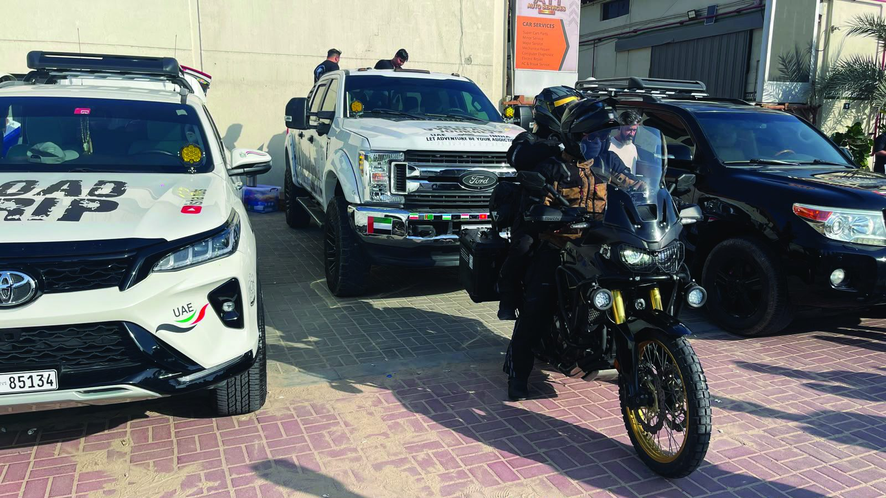
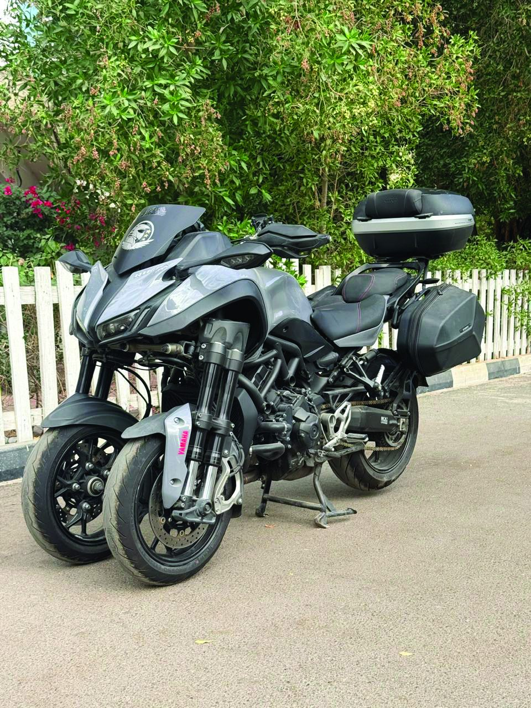
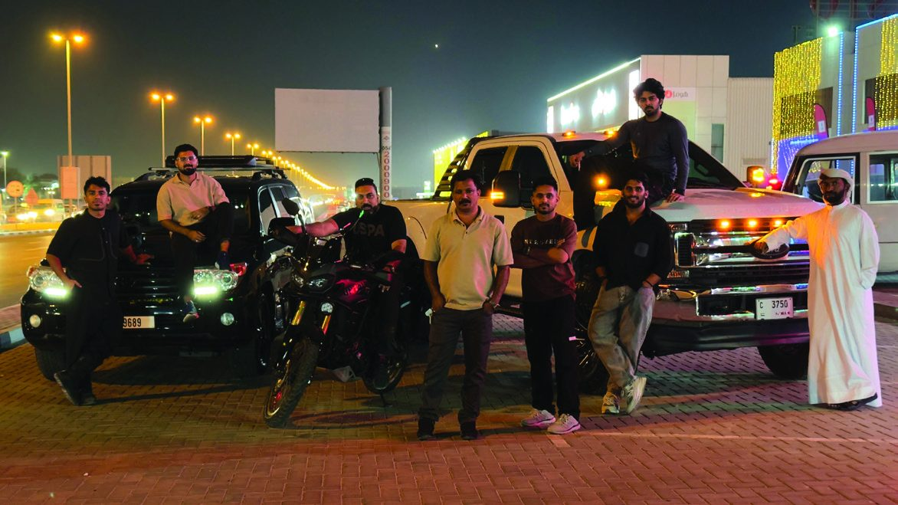
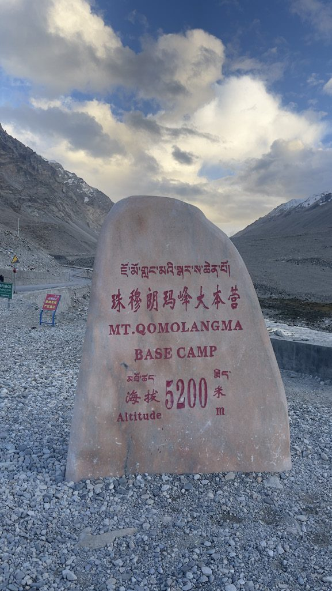
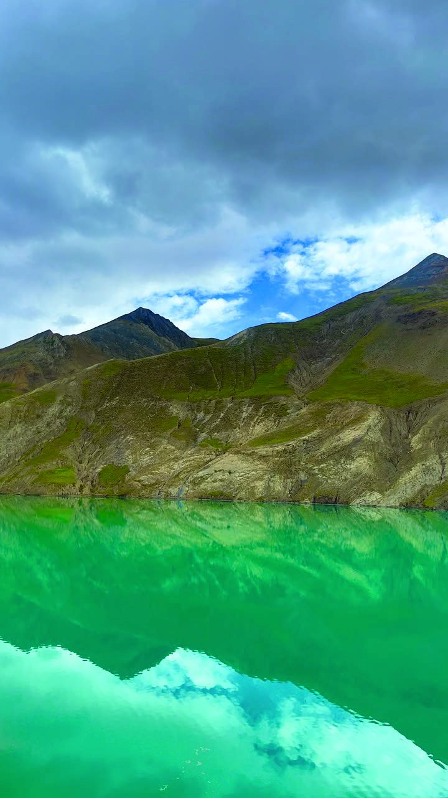
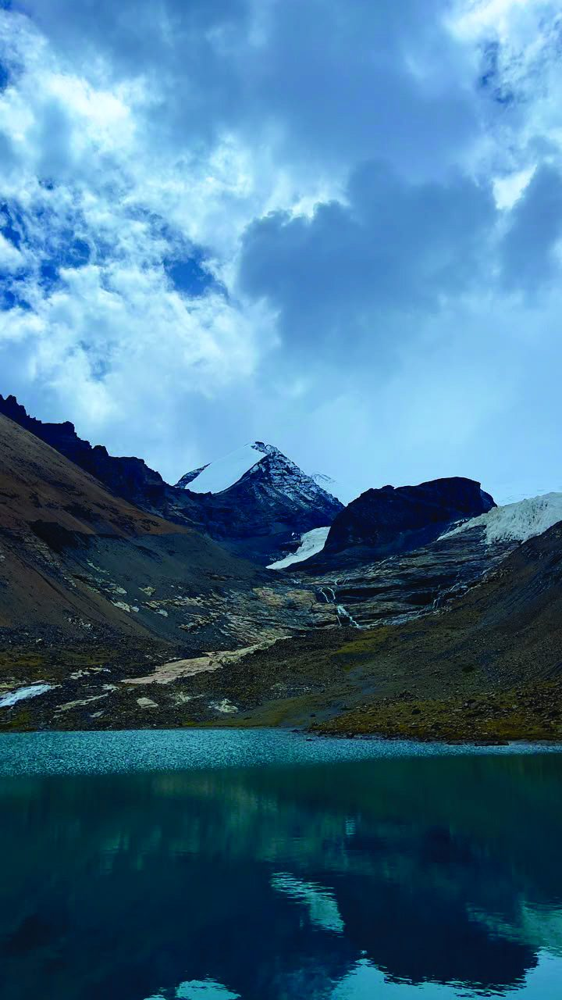
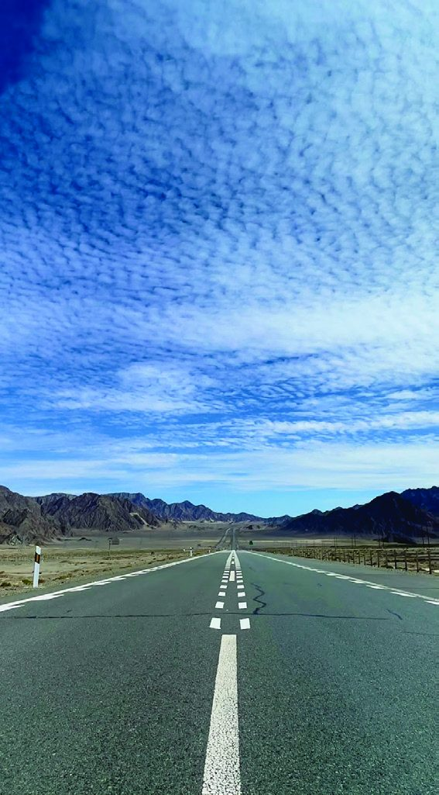
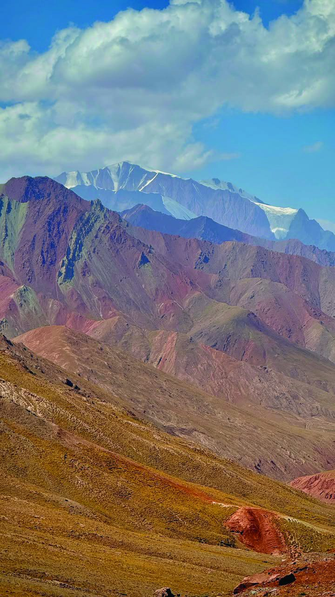

INDIA → UK · Season 1
India–UK Overland Expedition 2027
From India to Europe: cross the mighty Himalayas, stand at Everest Base Camp and Lhasa, conquer the Gobi Desert and the legendary Pamir Highway, run the Silk Road cities of Central Asia, then continue through the Caucasus and Turkey towards Europe and, potentially, London. Twenty countries, one continuous drive.
18,000+
Kilometres
65
Days
20
Countries
30 May
2027 Departure

Season 2 of UAE to INDIA overland expedition

Season 3 of UAE to INDIA overland expedition new route

The Crew of UAE to INDIA overland expedition Season 2
Week 1 — Nepal
Where the Road Meets the Himalayas

- Border crossing at the India–Nepal frontier, meeting point set by participant location
- Kashi Vishwanath Temple and Pashupatinath Temple
- Phewa Lake, Pokhara
- Optional-Bungee jumping in Pokhara, for an extra dose of adrenaline
- Kathmandu culture and city exploration before the Chinese border
Week 2 — Into the Roof of the World
Nepal Border to Lhasa · Gyirong → Old Tingri → Shigatse → Gyantse → Lhasa · ~1,000 km

- Friendship Bridge border crossing at Gyirong (2,700m)
- Gyatso La Pass (5,220m) — highest point on the Friendship Highway
- Everest Base Camp (North) and Rongbuk Monastery, the highest monastery in the world
- Manla Reservoir, a turquoise reservoir below Simila Pass — "Tibet's first dam"
- Yamdrok Lake, one of Tibet's three sacred lakes
- Lhasa: Jokhang Monastery, Potala Palace, and Drepung Monastery's monk debate courtyard
Week 3 — The Silent Plateau to the Silk Road
Lhasa to Turpan · Nagqu → Tangula Pass → Hoh Xil → Golmud → Dunhuang → Turpan · ~2,300 km

- Nagqu grasslands and the Qinghai–Tibet Highway
- Tangula Mountain Pass (5,231m) — one of the highest driveable points on Earth
- Hoh Xil Tibetan antelope reserve and Qarhan Salt Lake near Golmud
- A full Gobi Desert crossing
- Mogao "Buddha Caves," Dunhuang — UNESCO-listed grottoes with centuries of murals
- Mingsha Singing Dunes and Crescent Lake oasis
- Karez underground irrigation system, Turpan — still channeling meltwater today
Week 4 — Gateway to the Pamirs
Turpan to Tajikistan · Korla → Kucha → Aksu → Pamir · ~1,900 km

- Kashgar Old Town, Id Kah Mosque, and the legendary Sunday Bazaar livestock market
- Karakoram Highway, past Karakul Lake reflecting Muztagh Ata and Kongur Tagh
- Tashkurgan Stone Fortress and the Pamiri town of Tashkurgan
- Kulma Pass (4,362m) — one of the world's highest official border crossings
- Arrival in Pamir, Tajikistan — gateway to the Pamir Highway
Week 5 — Roof of the World to Central Asia
Tajikistan & Uzbekistan · Pamir → Dushanbe →Uzbekistan

- Ak-Baital Pass (4,655m) — highest point on the Pamir Highway
- Pamir's Mars-like plateau, home to wild Marco Polo sheep
- Pamir's botanical garden, the world's second-highest
- Wakhan Corridor along the Panj River, with Hindu Kush views
- Garmchashma terraced hot springs and Panj River Gorge at Kalaikhum
- Dushanbe: Rudaki Park and Hisor Fortress
- Exploring silk road towards Uzbekistan
Week 6 — Tien Shan to the Vanishing Aral Sea
Uzbekistan, Kyrgyzstan & Kazakhstan

- Uzbekistan's Chorsu Bazaar and ornate Soviet-era metro stations
- Sulaiman-Too sacred mountain and Jayma Bazaar, Kyrgystan (UNESCO)
- Tien Shan range via the Too-Ashuu Pass tunnel, past Toktogul Reservoir
- Bishkek: Ala-Too Square and Osh Bazaar
- Khoja Ahmed Yasawi Mausoleum, near Shymkent
- Aral Sea Ship Graveyard, Aralsk — rusting vessels on a dry seabed
Week 7 — Where Europe Meets Asia
Kazakhstan, Russia & Georgia

- kazakh — the only city in the world straddling two continents, on the Ural River
- Russia's 16th-century Kremlin, along the Caspian coast
- Darial Gorge, Georgian Military Highway — historically the "Gate of the Alans"
- Gergeti Trinity Church beneath Mount Kazbek, Kazbegi
- Ananuri Fortress and Tbilisi's Old Town
- Batumi's Black Sea coast
Week 8 — Anatolia to the Balkans
Turkey, Bulgaria & Romania. Ankara → Cappadocia → Istanbul → Sofia → Bucharest

- Black Sea tea plantations, Rize
- Atatürk's mausoleum, Ankara
- Sunrise hot air balloon ride over Cappadocia's fairy-chimney valleys
- Göreme Open-Air Museum and Uçhisar Castle
- Istanbul: Hagia Sophia, the Blue Mosque, and Topkapi Palace
- Sofia's Alexander Nevsky Cathedral and Bucharest's Old Town
Weeks 8–9 — Central Europe to London
Hungary → Slovakia → Czechia → Austria → Italy → Switzerland → France → UK
- Budapest's Buda Castle and Bratislava's hilltop castle
- Prague Castle and Charles Bridge; Vienna's Schönbrunn Palace
- Lake Como and the Milan Duomo, then the Swiss Alps into France
- Paris: the Eiffel Tower, Louvre, and a Seine river cruise
- Eurotunnel crossing into the UK
- London: Big Ben, Buckingham Palace, Tower Bridge, Westminster Abbey
- Expedition celebration, vehicle export prep, and shipping the vehicle back to India
Main Attractions Along the Way
 01
01Mount Everest View

02Everest Base Camp

03Xigaze-Gyangze

04Shannan-Nagarze
 05
05Mingsha mountain and cresent spring

06Somewhere in the tibet

07Trans-Alay Range
Inquire About This Route
Main attractions list still being finalised — more to come.
Package Details — India–UK 2027
Exclusively Yours
Private expedition
2 people
₹28,75,000
per person
A dedicated overland experience designed exclusively for you, without joining a regular group.
Small group
3 – 5 people
₹22,75,000
per person
Standard group
6 – 9 people
₹20,75,000
per person
Large group
10+ people
₹19,75,000
per person
Pricing is based on the number of people in a single booking, so larger groups pay less per person. All prices are per person; GST and TCS apply as shown below.
What's Included
Inclusions
- 01Founder-Led Overland Expedition — Accompanied throughout the journey by the two founders and experienced adventure travellers, with dedicated lead-vehicle support, convoy coordination, route guidance, and on-road assistance. With them leading the expedition, you can expect to experience much more than what is outlined in the itinerary — from spontaneous detours and hidden routes to authentic local encounters and a wide range of overland adventures. Their experience allows you to embrace the raw, unpredictable spirit of exploration while maintaining the highest priority on safety and responsible expedition travel.
- 02Visa & Entry Permit Arrangements — required visas, entry permits and travel permissions for the route coordinated by our team.
- 03China Vehicle Entry & Security Deposit — the required vehicle security/cash deposit for China entry, since China doesn't accept Carnet de Passages.
- 04Special Vehicle Permits — any additional vehicle permits or approvals beyond the Carnet, arranged by our team.
- 05Accommodation — 65 Nights — hotel accommodation for 65 nights, twin-sharing basis.
- 06Daily Breakfast — provided throughout the scheduled expedition where available.
- 07Refreshment & Hydration Kit — daily refreshments and hydration support, especially on longer driving days.
- 08Third-Party Vehicle Insurance — arranged for the participating vehicle(s) in countries where required.
- 09Expedition SIM Card — for communication and connectivity throughout.
- 10Road Books & Navigation Materials — a detailed road book and route maps for each vehicle.
- 11Wireless Radio Communication — radio sets for every vehicle to stay in touch within the convoy.
- 12Selected Attraction Tickets — entry tickets to selected attractions sponsored by us, some as surprise experiences en route.
- 13Route & Logistics Coordination — route planning, daily coordination, border-crossing and accommodation coordination.
What's Not Included
Exclusions
- 01Lunch & Dinner — Lunch and dinner are intentionally not included in the fixed package. We believe that experiencing local food and cuisine is an important part of travelling through different countries. Since individual tastes, dietary requirements and food preferences vary from person to person, we want to give participants the freedom to choose what and where they eat, rather than restricting everyone to a predetermined meal plan.Daily refreshments and hydration support will be provided during driving days.
- 02International Driving Permit — obtaining a valid IDP is each participant's own responsibility.
- 03Medical & Healthcare Expenses — hospital, consultation, treatment, medication or emergency costs.
- 04Unforeseen & Force-Majeure Expenses — illness, vehicle breakdowns, accidents, road blockages, adverse weather, natural disasters, border closures, government restrictions, or route diversions.
- 05Additional Accommodation from Delays — extra nights caused by unforeseen delays are the participant's cost.
- 06Camera & Video Equipment Charges — permits or fees for professional cameras, drones, or recording equipment.
- 07Expenses Before & After the Expedition — anything incurred before the official start or after the official end date.
- 08Expedited Visa Processing — urgent, express or priority visa service fees.
- 09UK–India Vehicle Shipment — freight, port charges, handling and documentation for shipping the vehicle home.
- 10Customs Clearance in India — Indian customs duties, clearance charges, and related documentation.
- 11Personal Expenses — shopping, laundry, minibar, room service, calls beyond the SIM package, alcohol, and other personal purchases.
- 12Vehicle Running & Repair Costs — fuel, tyres, spare parts, and mechanical or accident repairs, unless separately stated as included.
- 13Carnet de Passages en Douane (CPD) Fees & Security Deposit — All costs associated with obtaining and processing the Carnet de Passages en Douane (CPD), including issuance fees, administrative charges, security deposits, bank guarantees, and any related charges, are excluded from the package price and shall be payable by the traveller.